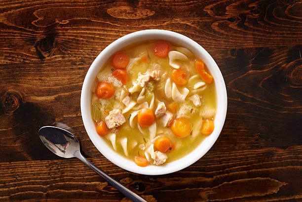
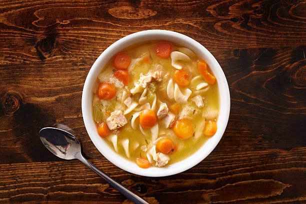

How to make Chicken Noodle Soup
Why these ingredients?
- Onions and Celery: In the first step of this chicken noodle soup recipe, diced onions and chopped celery are cooked in butter until they're aromatic and tender.
- Broth: This chicken noodle soup recipe calls for a mixture of chicken and vegetable broths. If you're short on time or ingredients, you can just use one or the other.
- Chicken: Of course, you'll need chicken. If you have leftover rotisserie chicken, you can use that in place of the cooked chicken breasts for a budget-friendly shortcut.
- Noodles: Make sure you don't add the noodles too early, as cooking them too long will make them mushy.
- Carrots: Carrots, which add a pop of bright color and flavor, are added at the end of cooking so they stay crisp. You can add them to the sautéed vegetables at the beginning if you like your carrots tender.
- Basil and Oregano: Dried basil and oregano lend warm, earthy flavor to this chicken noodle soup recipe.
Ingredients
- 1 tablespoon butter
- 1/2 cup chopped onion
- 1/2 cup chopped celery
- 4 (14.5 ounce) cans chicken broth
- 1 (14.5 ounce) can vegetable broth
- 1/2 pound chopped cooked chicken breast
- 1 1/2 cups egg noodles
- 1 cup sliced carrots
- 1/2 teaspoon dried basil
- 1/2 teaspoon dried oregano
- salt and ground black pepper to taste
Steps
- Melt butter in a large pot over medium heat. Add onion and celery and cook until just tender, about 5 minutes.
- Add chicken broth, vegetable broth, chicken, egg noodles, carrots, basil, oregano, salt, and pepper. Stir to combine and bring to a boil.
- Reduce heat and simmer for 20 minutes.
| Calories | Fat | Carbs | Protein |
|---|---|---|---|
| 162 | 6g | 12g | 13g |
Historical context
Chicken soup arrived in America as early as the 16th century thanks to
European immigrants, mainly Jews, Mennonites and Amish. The latter
made an all-American combination by adding dry and fresh corn they
adopted from Native Americans.
 (1).png) 
